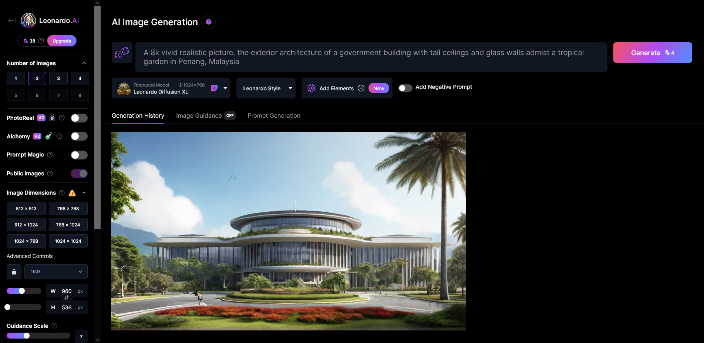
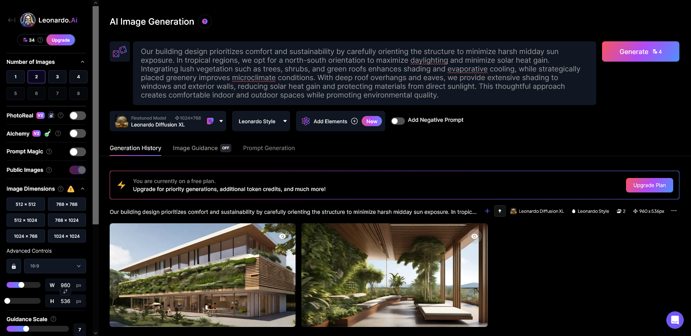

This is How I Generated My Image
 Leonardo.aiThe Harmony Citaldeck Features
- tall ceilings
- glass walls
- tropical garden in Penang Malaysia
 Prompt:
Prompt:
A 8k vivid realistic picture. the exterior architecture of a government building with tall ceilings and glass walls admist a tropical garden in Penang, Malaysia.
... OR Generate From ChatGPT Descriptions or Your Answers

Prompt:
Our building design prioritizes comfort and sustainability by carefully orienting the structure to minimize harsh midday sun exposure. In tropical regions, we opt for a north-south orientation to maximize daylighting and minimize solar heat gain. Integrating lush vegetation such as trees, shrubs, and green roofs enhances shading and evaporative cooling, while strategically placed greenery improves microclimate conditions. With deep roof overhangs and eaves, we provide extensive shading to windows and exterior walls, reducing solar heat gain and protecting materials from direct sunlight. This thoughtful approach creates comfortable indoor and outdoor spaces while promoting environmental quality.